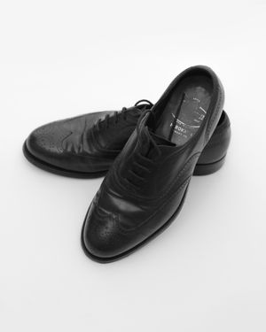
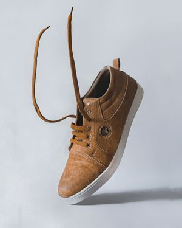
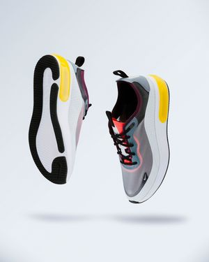
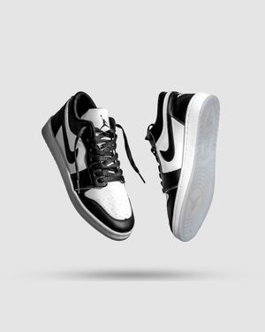

Formal Oxford
200$

Suede Sneaker
300$

Sport Runner
400$

Air Jordan 1
500$

200$

300$

400$

500$
Welcome to our store where style meets performance. At our brand, we believe that shoes are more than just an accessory—they are the foundation of your confidence, the companion of your daily journey, and the statement of your unique identity. Founded with a profound passion for footwear fashion and athletic excellence, our brand was built to bridge the gap between premium aesthetics and uncompromising comfort. Whether you are stepping into a high-stakes corporate meeting, conquering a rigorous workout, or navigating the vibrant energy of city streets, we ensure you do it with absolute poise and unmatched distinction. Every great venture starts with a vision, and ours was born out of a simple frustration: the endless compromise between looking sharp and feeling comfortable. We noticed that traditional footwear often sacrificed comfort for elegance, while athletic wear rarely matched the sophisticated demands of modern urban fashion. We set out to change that narrative. Our vision is to become the ultimate destination for individuals who refuse to settle. We envision a world where every step you take feels effortless, supported, and stylish. By fusing modern design trends with cutting-edge comfort technology, we strive to redefine what modern footwear stands for. Our visual identity is deeply rooted in sophistication, strength, and modern minimalism. Dominated by a striking palette of Royal Blue, Deep Black, and Crisp White, our brand reflects the exact qualities we infuse into our products. Royal Blue represents our ambition, loyalty to quality, and the bold statement our shoes make in your wardrobe. Deep Black symbolizes timeless elegance, versatility, and the sleek, professional edge of our formal and casual collections. Crisp White embodies purity, clean design, and the energetic, fresh vibe of our premium athletic sneakers. This intentional color scheme flows seamlessly through our digital storefront, creating an immersive, clean, and modern shopping experience that feels as premium as the shoes we deliver. Quality is not just a buzzword for us; it is our core operational standard. We partner with skilled artisans and modern manufacturers who share our obsession with detail. From the selection of breathable mesh fabrics and premium leathers to the stitching of every seam and the engineering of supportive outsoles, every pair of shoes in our collection undergoes rigorous quality checks. We test our footwear for durability, flexibility, and ergonomic support to ensure that whether you choose a classic formal oxford, a versatile suede sneaker, or a high-performance runner, your feet are cradled in luxury and protected against fatigue. We understand that life is dynamic, and your footwear needs to keep up. That is why our catalog is thoughtfully curated to cater to every facet of your lifestyle, including formal collections, casual streetwear, and high-performance athletic series. You are not just a customer; you are part of our growing community. We know that buying shoes online requires trust, which is why we put your satisfaction at the forefront of everything we do. Thank you for choosing us as your trusted style partner. Lace up, stand out, and let’s walk into an extraordinary future together.